След като интервюирахме стилисти, които обличат звезди с ограничен бюджет, и търговци на винтидж стоки, които снабдяват модни редактори, разкриваме точно как да изградите луксозно изглеждащ гардероб без луксозната цена.
Играта на материите: Как да имитирате луксозни текстури
Първото правило на „богатия“ вид? Всичко е в материята. Истинската коприна, кашмирът и фината вълна идват с главозамайващи цени, но с тези замени никой няма да разбере разликата.
За коприна – пропуснете блузата за 300 долара и потърсете вискозен шалис (viscose challis) – тя пада точно като истинската, но струва около 12 долара за ярд. Търсете етикети с надпис „изпран сатен“ (washed satin) и ще откриете парчета, които се усещат също толкова луксозно. Още по-добре? Купро (Cupro) – тайната материя на инсайдерите, която технически е веган коприна. Тя се мачка елегантно и диша като истинска.
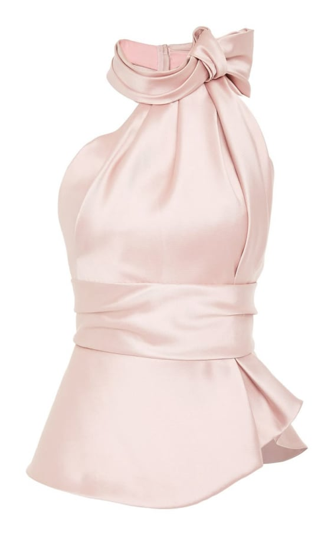
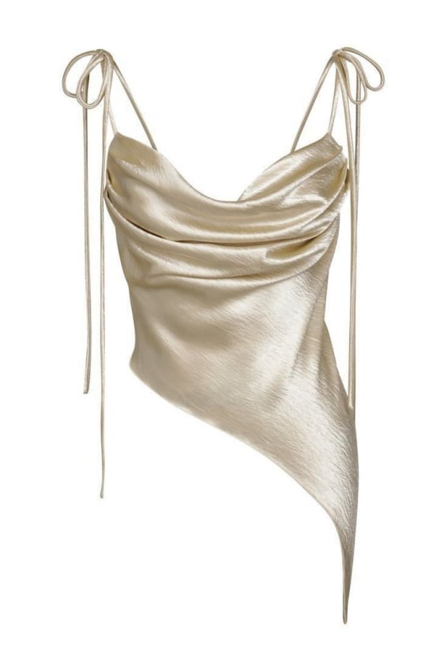
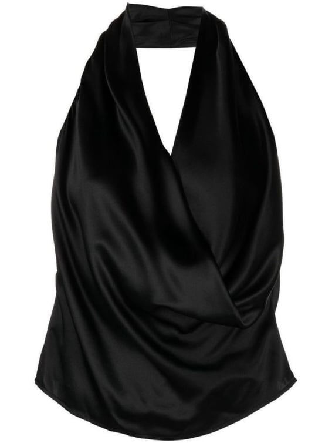
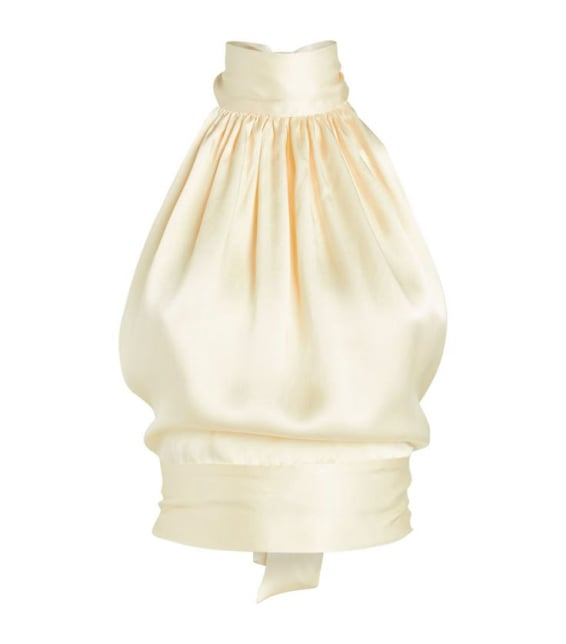
Обърнете внимание на цветовете – неутралната палитра винаги изглежда по-скъпа. Заложете на бежово, камилско, класическо черно и бяло.
Когато става въпрос за вълна, триацетатните смеси са най-добрият ви приятел. Те минават „теста с мачкането“ – истинската вълна се връща бавно в първоначалната си форма, когато я стиснете в шепа, и качественият триацетат прави същото.
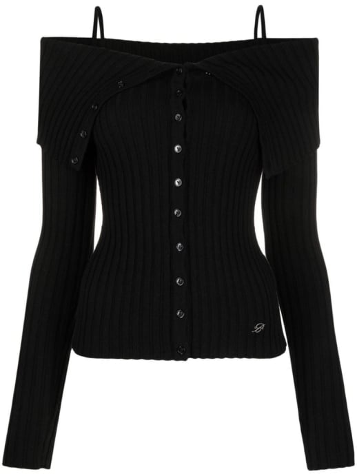
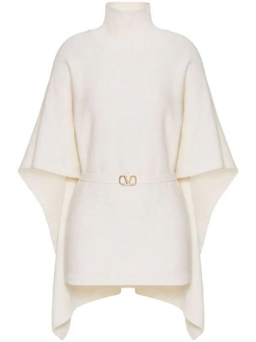
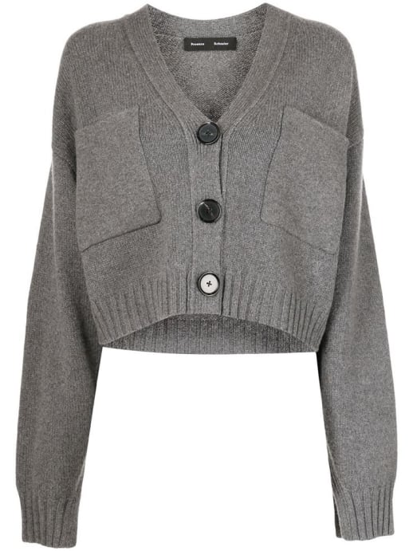
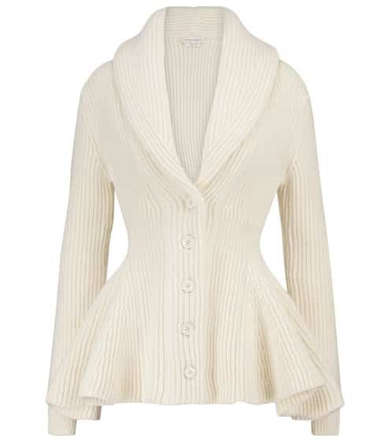
За усещане на кашмир без съответната цена, издирете винтидж пуловери от ангора от 80-те години. Те са също толкова меки и на малка част от цената.
Кожата е по-трудна, но не и невъзможна. Коскин (Koskin) – италианско ПУ (полиуретан), с времето развива патина като истинска кожа. Можете да го разпознаете по зърнестата му задна част – евтиното ПУ е гладко. За якета, восъчният памук е върховният дубликат. Той дава онзи „мото“ завършек без цената от 2000 долара.
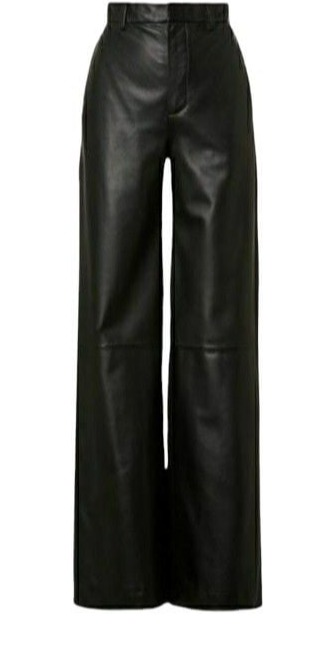
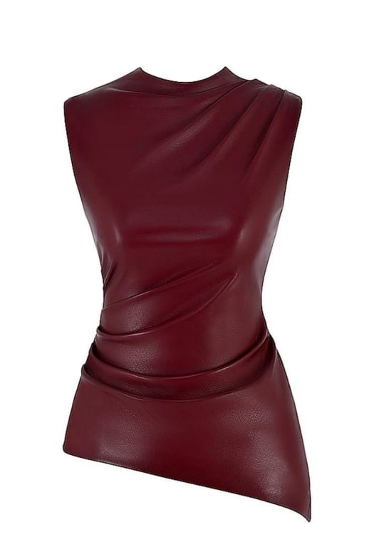
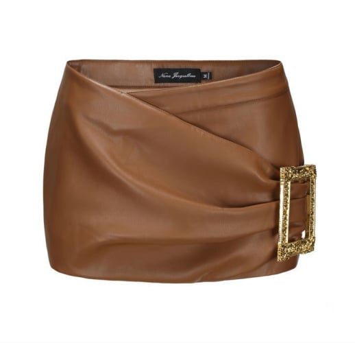
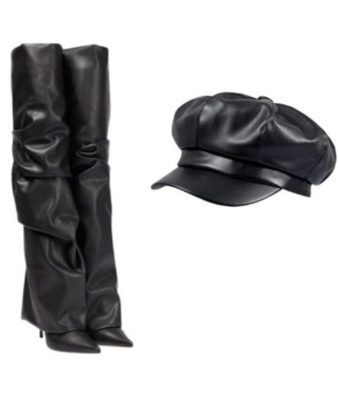
Лов на винтидж находки като професионалист
Винтиджът е тайното оръжие на всеки стилист, работещ с бюджет, но не всички стари дрехи са създадени еднакви. Ключът е да знаете кои етикети гарантират качество.
Етикетите "Made in USA" от 70-те до 90-те години почти винаги означават тежки, естествени материи. "Union Made" е друг златен билет – той е индикатор за превъзходна изработка. Проверете резервите на шевовете; ако са щедри, значи сте ударили джакпота.
Обковът също е от значение. Японските ципове "Seez" са сигурен знак за качество – те са били често използвани в стари наличности на YSL и други марки от висок клас. Ако намерите дреха с такива, взимайте я.
След като се сдобиете с вашите винтидж находки, няколко стратегически корекции могат да ги направят да изглеждат като правени по поръчка. Винаги първо коригирайте шевовете на раменете – това моментално прави саката от втора употреба да изглеждат шити по мярка. Сменете пластмасовите копчета с такива от винтидж рог (можете да намерите лотове в eBay за 5 долара) и изведнъж това сако за 20 долара изглежда сякаш е излязло от парижко ателие.
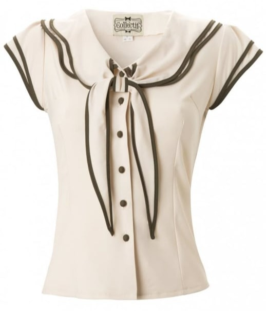
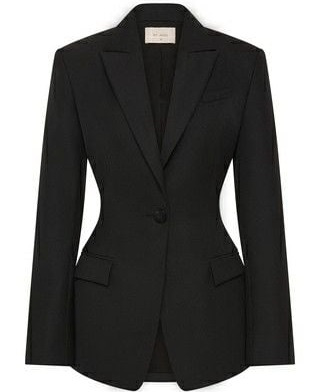
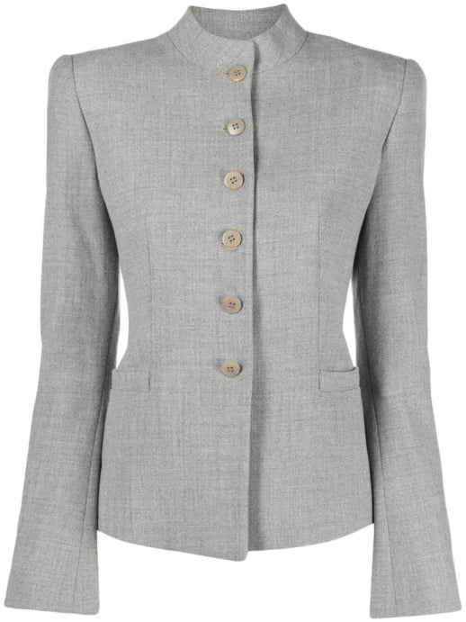
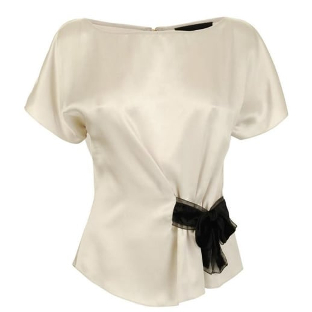
Илюзията на логото: Как да накарате бързата мода да изглежда скъпо
Логата са минно поле. Твърде големи – и изглежда сякаш се стараете прекалено много. Твърде малки – и никой не ги забелязва. Трикът е в детайлите.
Фокусирайте се върху металните елементи. Малките накрайници на циповете (като тези на палтата на Totême) изглеждат много по-„богато“ от гигантските монограми. Ако дадена дреха идва с евтини закопчалки, заменете ги с антични месингови елементи – секцията за „викториански копчета“ в Etsy е златна мина.
Има един артикул на Zara, който постоянно заблуждава дори модните редактори: oversized вълненото сако. Махнете подплънките на раменете и изведнъж то изглежда сякаш е дошло директно от Celine.
Шрифтът също има значение. Логата с изчистени, модерни шрифтове като Helvetica (в стил The Row) винаги изглеждат по-скъпи от ръкописните шрифтове (съжаляваме, Michael Kors).
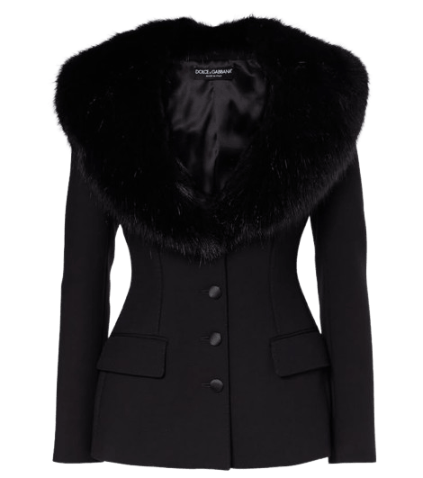
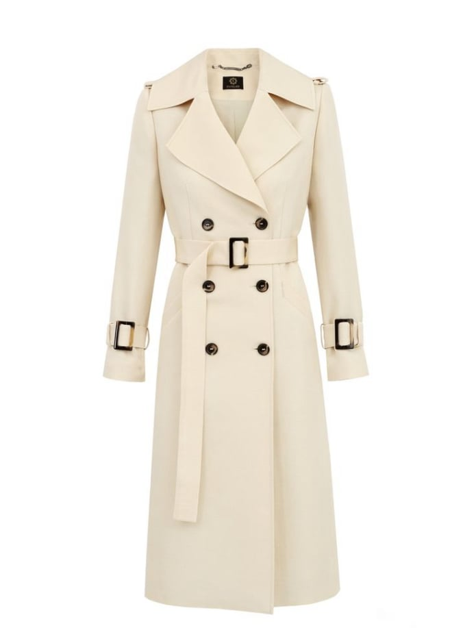
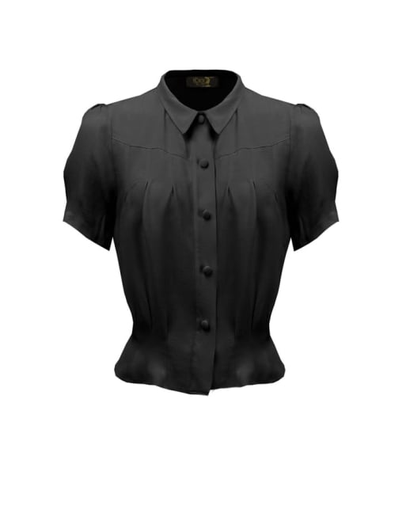
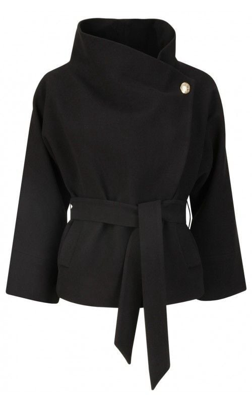
Когато се колебаете, запитайте се: „Това изглежда ли умишлено изчистено или случайно евтино?“ Ако се разколебаете, добавете една „архитектурна“ обувка (квадратните върхове моментално издигат визията) или вържете винтидж копринен шал на чантата си (не на врата – това е твърде очевидно).
Както казва поговорката: „Богатството шепне. Колкото повече плащаш, толкова по-тихо става.“